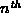

Data Structures and Algorithms
with Object-Oriented Design Patterns in Java
Data Structures and Algorithms
with Object-Oriented Design Patterns in Java


-
For each of the following key sequences
determine the binary heap obtained when the keys
are inserted one-by-one in the order given
into an initially empty heap:
- 0, 1, 2, 3, 4, 5, 6, 7, 8, 9.
- 3, 1, 4, 1, 5, 9, 2, 6, 5, 4.
- 2, 7, 1, 8, 2, 8, 1, 8, 2, 8.
-
For each of the binary heaps
obtained in Exercise
 determine the heap obtained after three consecutive
dequeueMin operations.
determine the heap obtained after three consecutive
dequeueMin operations. -
Repeat Exercises and for a leftist heap.
-
Show the result obtained by inserting the keys
one-by-one in the order given
into an initially empty binomial queue.
-
A full binary tree is a tree in which each node
is either a leaf or its is a full node
(see Exercise ).
Consider a complete binary tree with n nodes.
-
For what values of n is a complete binary tree
a full binary tree.
-
For what values of n is a complete binary
a perfect binary tree.
-
Prove by induction Theorem .
-
Devise an algorithm to determine whether a given binary tree is a heap.
What is the running time of your algorithm?
-
Devise an algorithm to find the largest item
in a binary min heap.
Hint: First, show that the largest item
must be in one of the leaves.
What is the running time of your algorithm?
-
Suppose we are given an arbitrary array of n keys
to be inserted into a binary heap all at once.
Devise an O(n) algorithm to do this.
Hint: See Section .
-
Devise an algorithm to determine whether a given binary tree
is a leftist tree.
What is the running time of your algorithm?
-
Prove that a complete binary tree is a leftist tree.
-
Suppose we are given an arbitrary array of n keys
to be inserted into a leftist heap all at once.
Devise an O(n) algorithm to do this.
Hint: See Exercises and .
-
Consider a complete binary tree
with its nodes numbered as shown in Figure .
Let K be the number of a node in the tree.
The the binary representation of K is
where .
-
Show that path from the root to a given node K
passes passes through the following nodes:
-
Consider a complete binary tree with n nodes.
The nodes on the path from the root to the 
are special.
Show that every non-special node
is the root of a perfect tree.
-
The enqueue algorithm for the BinaryHeap class
does
 object comparisons in the worst case.
In effect, this algorithm does a linear search from a leaf
to the root to find the point at which to insert a new key.
Devise an algorithm that a binary search instead.
Show that the number of comparisons required becomes .
Hint: See Exercise .
object comparisons in the worst case.
In effect, this algorithm does a linear search from a leaf
to the root to find the point at which to insert a new key.
Devise an algorithm that a binary search instead.
Show that the number of comparisons required becomes .
Hint: See Exercise . -
Prove Theorem .
-
Do Exercise .
 Copyright © 1998 by Bruno R. Preiss, P.Eng. All rights reserved.
Copyright © 1998 by Bruno R. Preiss, P.Eng. All rights reserved.